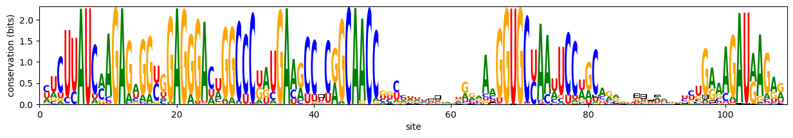

SequenceLogos examples with RFAM
import GitHub, PyPlot, SequenceLogos
using Downloads: download
using Statistics: mean
using LogExpFunctions: xlogxFetch RNA family alignment RF00162 from RFAM (pre-stored as a Github Gist)
data = GitHub.gist("b63e87024fac287a1800b1555276a04b")
url = data.files["RF00162-trimmed.afa"]["raw_url"]
path = download(url; timeout = Inf)Parse lines
seqs = String[]
for line in eachline(path)
if startswith(line, '>')
continue
else
push!(seqs, line)
end
endRNA nucleotides
NTs = "ACGU-";One-hot representation
function onehot(s::String)
return reshape(collect(s), 1, length(s)) .== collect(NTs)
end
X = reshape(reduce(hcat, onehot.(seqs)), 5, :, length(seqs));Sequence logo
xlog2x(x) = xlogx(x) / log(oftype(x,2))
logo_from_matrix(w::AbstractMatrix) = SequenceLogos.logo_from_matrix(w, replace(NTs, '-' => '⊟'))
function seqlogo_entropic(p::AbstractMatrix; max_ylim=true)
@assert size(p, 1) == 5 # nucleotides + gap
w = p ./ sum(p; dims=1)
H = sum(-xlog2x.(w); dims=1)
@assert all(0 .≤ H .≤ log2(5))
SequenceLogos.plot_sequence_logo(logo_from_matrix(w .* (log2(5) .- H)), SequenceLogos.nt_color)
max_ylim && PyPlot.matplotlib.pyplot.ylim((0, log2(5)))
PyPlot.matplotlib.pyplot.ylabel("conservation (bits)")
PyPlot.matplotlib.pyplot.xlabel("site")
return nothing
endseqlogo_entropic (generic function with 1 method)Plot!
PyPlot.matplotlib.pyplot.figure(figsize=(15,2))
seqlogo_entropic(reshape(mean(X; dims=3), 5, 108))
PyPlot.matplotlib.pyplot.gcf()
This page was generated using Literate.jl.